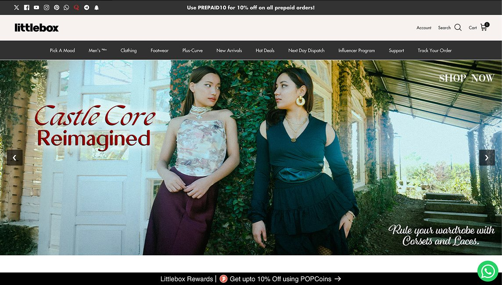
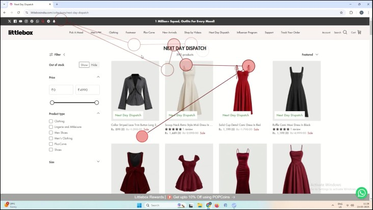
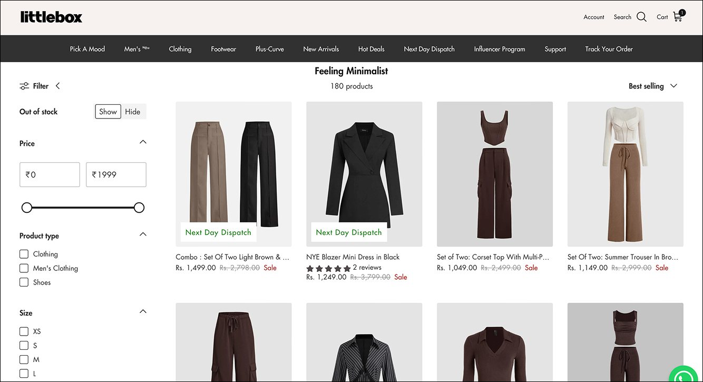
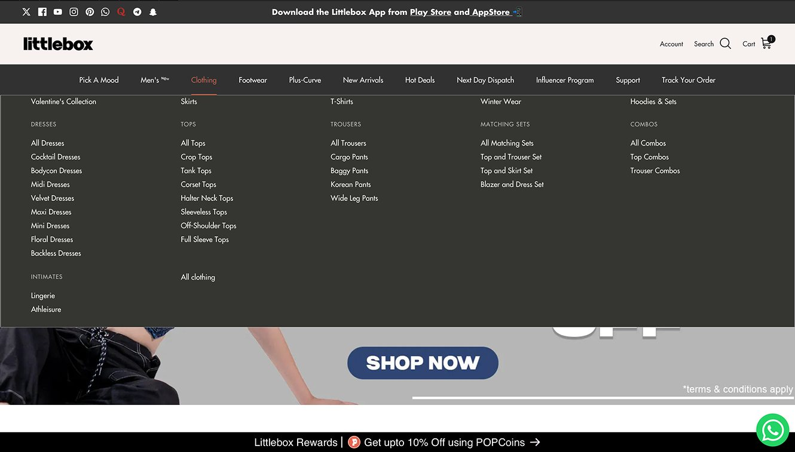
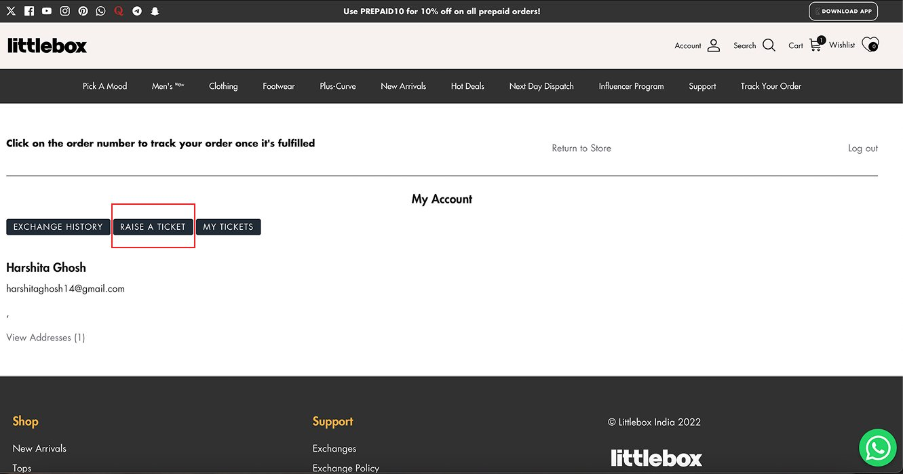
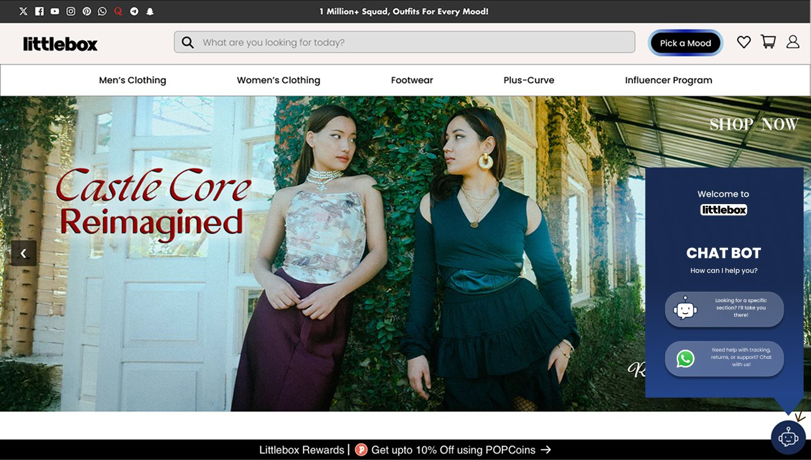
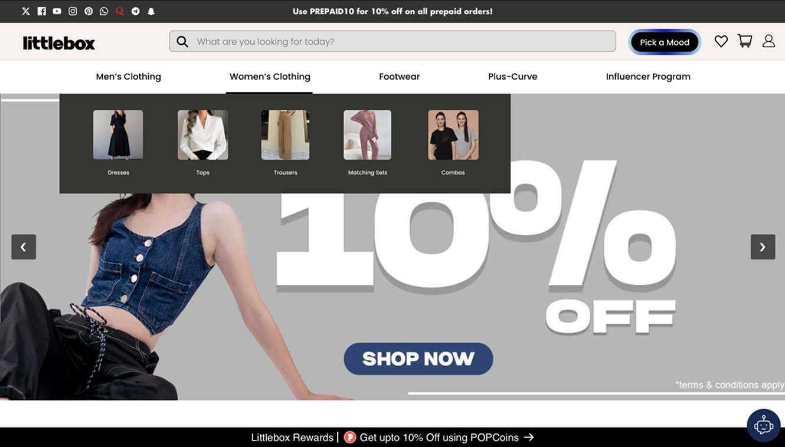
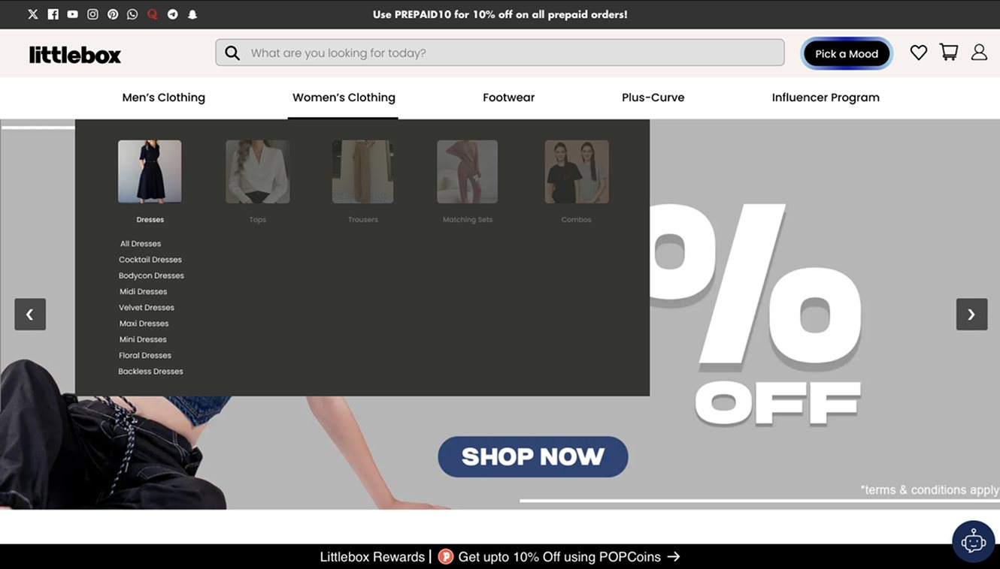
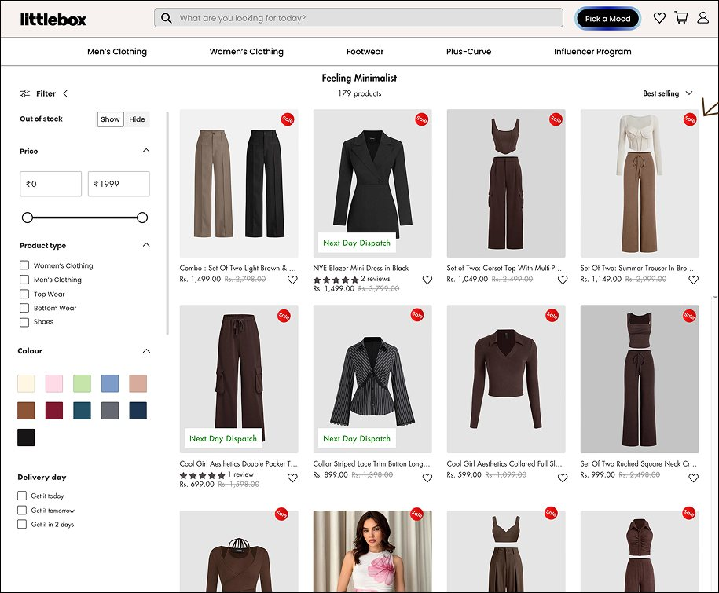
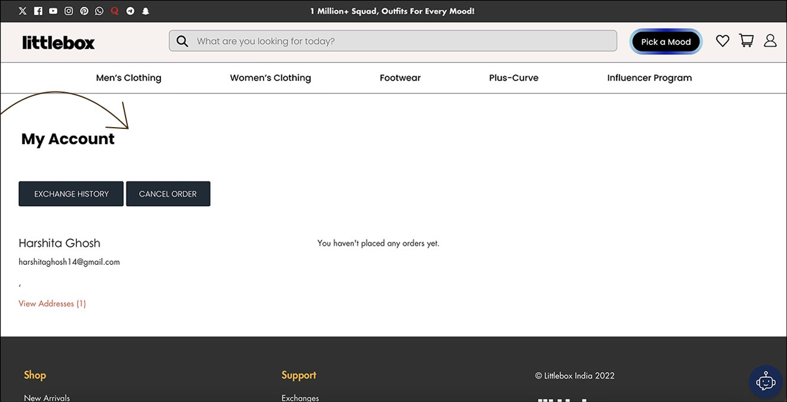

TASK 01
Find a pink, full-sleeve top under ₹500 in size M.
A UX evaluation of an e-commerce experience to understand where shoppers struggled, what the evidence revealed, and how the interface could become easier to use.

LittleBox offered shoppers multiple ways to discover products, but the experience needed to be evaluated for discoverability, navigation, and ease of completing everyday tasks.
Our question: Where does the interface create unnecessary effort, confusion, or hesitation?
We combined expert evaluation, user testing, and quantitative and behavioural measures to understand both usability problems and the effort required to navigate the experience.
Identified potential usability issues against established principles.
Observed how participants navigated the site and completed tasks.
Measured participants’ perceived usability.
Examined perceived workload.
Helped identify visual attention patterns and potential discoverability issues.
Provided lenses for examining choice complexity and interaction effort.
participants in the overall study
user tests conducted independently by me
representative tasks
Find a pink, full-sleeve top under ₹500 in size M.
Browse products through “Feeling Minimalist.”
Cancel an order.
Find a next-day delivery option.
These tasks helped examine product discovery, category navigation, order management, and delivery-related interactions.
The overall System Usability Scale (SUS) score was 36.79, indicating substantial room for usability improvement.
The low scores suggested that usability difficulties were not limited to one experience group.
What this meant for the redesign: We needed to reduce friction across the experience rather than focus on cosmetic changes alone.
NASA-TLX scale
NASA-TLX results ranged from 31 to 97.67, indicating considerable variation in perceived workload across participants.

Eye-tracking observations also helped examine how people scanned the interface and whether visual elements attracted attention as intended.
Together, these methods helped us look beyond task completion to the effort and uncertainty involved.
Filtering and navigation made it harder to narrow down product choices.
1
Some elements looked interactive without clearly communicating their function.
2The interface did not consistently make the next step obvious.
3
Labels such as “Raise a Ticket” were less direct than the action shoppers were trying to complete: “Cancel Order.”
4
Based on the evaluation findings, I redesigned the LittleBox homepage to improve clarity, hierarchy, and access to important actions.





A usability score tells us where to investigate. Observations help us understand what might be causing the difficulty.
A more usable experience is not necessarily one with more features. It is one that helps people understand the interface and complete their goals with less friction.
Clear navigation, visible feedback, and familiar labels influence what people notice, understand, and feel confident enough to do.
The strongest design changes are connected to observed problems, rather than personal preference or visual trends.
I learned to treat UX evaluation not as a checklist, but as a process of turning observations into evidence and evidence into deliberate design decisions.